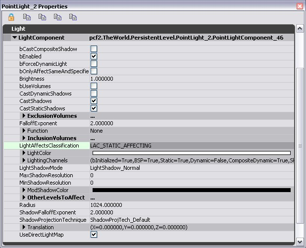
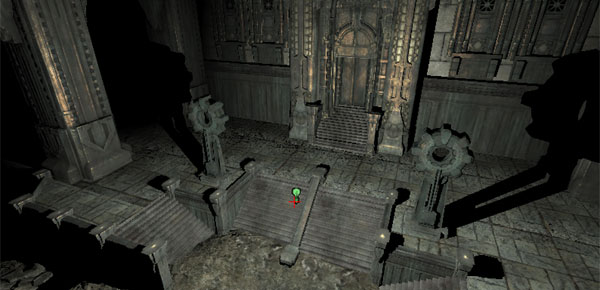
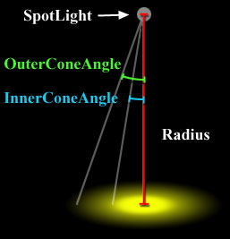
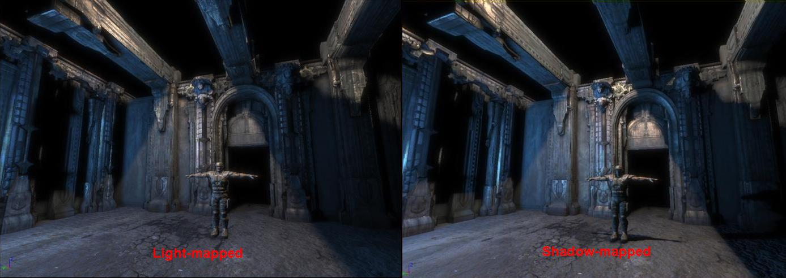
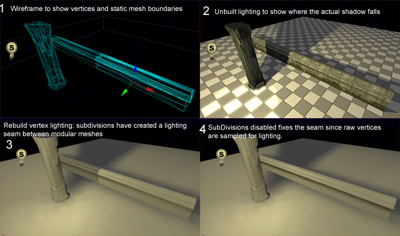

UDN
Search public documentation:
LightingReferenceCH
English Translation
日本語訳
한국어
Interested in the Unreal Engine?
Visit the Unreal Technology site.
Looking for jobs and company info?
Check out the Epic games site.
Questions about support via UDN?
Contact the UDN Staff
日本語訳
한국어
Interested in the Unreal Engine?
Visit the Unreal Technology site.
Looking for jobs and company info?
Check out the Epic games site.
Questions about support via UDN?
Contact the UDN Staff
光照参考指南
概述
遗留选项
光照类型及选项的概述
全局光照属性
这里是一个最常见的光源属性的纲要。使用点光源为例，因为它是最常用的光源。当某个选项不能应用于所有光源时将会进行注释。
bCastCompositeShadow(是否投射合成的阴影): 这个选项影响光照环境. bEnabled(是否启用): 这选项允许您切换光源的开关状态。静态光源不能在游戏中切换开关状态，但如果您想快速地看到它在场景中产生了多少影响,在当编辑光源时切换这个标志是有用的。 bForceDynamicLight(是否强制使用动态光源): 设置这个选项将排除那个光源(没有光照贴图 或 阴影贴图)的任何预计算，强制使它为能够投射模板阴影的动态光源。这项对于天空光源无效。要获得关于模板阴影的更多信息，请查看阴影参考指南文档。 bOnlyAffectSameAndSpecifiedLevels(是否仅影响光源所在关卡和指定关卡): 使用这个选项，光源仅影响和光源在同一个动态载入关卡中的actors。如果您想让光源基于每个关卡进行影响时，这项是有用的。您也可以在OtherLevelsToAffect数组中添加其它要受该光源影响的关卡。 Brightness(亮度): 只是简单地控制光源的亮度。光源的亮度没有上限，但是对于有光照贴图的光源我们推荐保持光源的亮度低于16，因为如果亮度太高将使您牺牲在您的光照贴图中的范围。 bUseVolumes(是否使用体积): 允许您将光源的影响范围限定在放置在世界中的一个体积内。参照以下来获得关于光源体积的全面解释。 CastDynamicShadows(投射动态阴影): 如果光源正在影响动态actors，这个标志告诉光源它是否需要投射一个动态阴影。设置这项为false(假)通常会产生更好的性能。这项对于天空光源无效。 CastShadows(投射阴影): 如果设置这项为False(假)，这个选项将会覆盖 CastDynamicShadows 和 CastStaticShadows 。如果设置这项为true(真)，那么其它的两个选项将控制静态和动态阴影。这项对于天空光源无效。 CastStaticShadows(投射静态阴影): 这个告诉光源是否要从静态几何体投射阴影。这个通常对于禁用静态光源的静态阴影是有用的。这些常应用于假的反射光线。这项对于天空光源无效。 ExclusionVolumes(排除体积): 这个数组指向选项bUseVolumes。参照以下来获得关于光源体积的全面解释。 FalloffExponent(衰减指数): 这项允许您修改光源的衰减值。默认的衰减值为2， 数值越小，衰减越明显，到达了半径范围边界之前所维持的亮度越高。 FalloffExponent(衰减指数)对于定向光源 或 天空光源是无效的。
Function(函数): LightFunction(光照函数)允许您通过将光源的效果和一个自发光的材质相结合来修改光源。请参照以下来获得关于Light Functions(光源函数)的全面解释。
InclusionVolumes(包含体积): 这个数组指向选项bUseVolumes。参照以下来获得关于光源体积的全面解释。
LightAffectsClassification (LAC): 我们创建了光源的几个分类，它们基本上是光源属性的预先设置。分类将会利用精灵图标来表示，从而当在编辑器中浏览一个关卡时很容易地发现不同的光源类型(比如，在上面的衰减图片中，在光源图标上的S代表它是一个静态光源)。请参照以下来获得关于LACs的全面解释。
LightColor: 简单地控制光源的颜色。
FalloffExponent(衰减指数)对于定向光源 或 天空光源是无效的。
Function(函数): LightFunction(光照函数)允许您通过将光源的效果和一个自发光的材质相结合来修改光源。请参照以下来获得关于Light Functions(光源函数)的全面解释。
InclusionVolumes(包含体积): 这个数组指向选项bUseVolumes。参照以下来获得关于光源体积的全面解释。
LightAffectsClassification (LAC): 我们创建了光源的几个分类，它们基本上是光源属性的预先设置。分类将会利用精灵图标来表示，从而当在编辑器中浏览一个关卡时很容易地发现不同的光源类型(比如，在上面的衰减图片中，在光源图标上的S代表它是一个静态光源)。请参照以下来获得关于LACs的全面解释。
LightColor: 简单地控制光源的颜色。
 有三种方式来选择光源颜色：
有三种方式来选择光源颜色： - 手动地输入R G B颜色值。这些值的范围是从0到255。
- 使用颜色选择器(在红色箭头上面的按钮)
- 从编辑器视口中选择颜色(在蓝色箭头上面的按钮)
PointLight(点光源)

点光源(PointLight)是从空间中的一个点发出并且可以照亮各个方向的光源。 在actor浏览器中，你会看到有3个关于点光源的不同类别。普通的点光源是不能在游戏中进行移动或切换的；它们完全是静止的。值得感激的是，我们有其它的两个类别可以在需要的时候提供这个功能。
PointLightMovable (可移动的点光源)
和普通的点光源类似但是您可以使用matinee在游戏中移动它们的位置。要实现这个功能，只要简单地将这个点光源和Matinee中的一个组相关联并为该光源创建一个浮点型的属性轨迹即可。您可以使用kismet在游戏中切换一个PointLightMovable (可以动的点光源)的开关状态。PointLightMovable (可以动的点光源)不能使用光照贴图。PointLightToggleable(可切换的点光源)
这个光源和普通的点光源类似但是您可以通过使用kismet在游戏中切换光源的开关状态。您不可以在游戏中移动一个PointlightToggleable(可切换的点光源)。它也不能使用光照贴图.。Spotlight(聚光源)
SpotLight(聚光源)是一个具有定向锥角的光源。 InnerConeAngle(内锥角)
这项决定了从聚光源(SpotLight)的"热点区域"的中心到"热点区域"边缘的角度度数。默认为1.0度。最大为89.0度。
在整个热点区域中亮度是不变的，然后从热点区域向外到光源影响范围的边界的区域内光源的亮度是衰减的。正如下图所示。最高的聚光源的内锥角是0度，这导致了一个从明亮(光源影响范围的中心)到黑暗(光源影响范围的边缘)平滑的过渡。最低的天空光源的内锥角为40度，这导致光源的亮度在光源所影响的大部分区域内的亮度都是一致的，然后在它影响范围边缘部分亮度进行快速的衰减。
InnerConeAngle(内锥角)
这项决定了从聚光源(SpotLight)的"热点区域"的中心到"热点区域"边缘的角度度数。默认为1.0度。最大为89.0度。
在整个热点区域中亮度是不变的，然后从热点区域向外到光源影响范围的边界的区域内光源的亮度是衰减的。正如下图所示。最高的聚光源的内锥角是0度，这导致了一个从明亮(光源影响范围的中心)到黑暗(光源影响范围的边缘)平滑的过渡。最低的天空光源的内锥角为40度，这导致光源的亮度在光源所影响的大部分区域内的亮度都是一致的，然后在它影响范围边缘部分亮度进行快速的衰减。
 OuterConeAngle(外锥角)
这项决定了从聚光源(SpotLight)的中心到光源影响范围的外边缘的角度。默认为44.0度。最大角度为89度。
注意: 如果外锥角(OuterConeAngle)比内锥角(InnerConeAngle)小，则会导致光源有一个尖锐的锯齿边缘。
OuterConeAngle(外锥角)
这项决定了从聚光源(SpotLight)的中心到光源影响范围的外边缘的角度。默认为44.0度。最大角度为89度。
注意: 如果外锥角(OuterConeAngle)比内锥角(InnerConeAngle)小，则会导致光源有一个尖锐的锯齿边缘。
 Radius(半径)
这项决定了聚光源(SpotLight)所能到达的距离。默认为1024.0。
以下的图表可以帮助阐明聚光源(SpotLight)的各个属性间的关系:
Radius(半径)
这项决定了聚光源(SpotLight)所能到达的距离。默认为1024.0。
以下的图表可以帮助阐明聚光源(SpotLight)的各个属性间的关系:

在actor浏览器中，您会看到有3各类别不同的聚光源(SpotLight) 。普通的聚光源(SpotLights)不可以在游戏中进行移动或切换；它们完全是静止的。值得感激的是，我们有其它的两个类别可以在需要的时候提供这个功能。
SpotLightMovable (可移动的聚光源)
和普通的聚光源类似但是您可以使用matinee在游戏中移动该光源的位置。为了实现这个目的，可以简单地将这个SpotLight(聚光源)和Matinee中的一个组相关联，并为其创建一个浮点属性的轨迹。您也可以使用kismet切换SpotLightMovable (可移动的聚光源)的开关状态。一个SpotLightMovable(可移动的聚光源)不能使用光照贴图.SpotlightToggleable (可切换的聚光源)
这个光源和普通的聚光源类似，但是您可以使用kismet来切换它的开关状态。您不能在游戏中移动一个 SpotLightToggleable (可切换的聚光源)。它也不能使用光照贴图.DirectionalLight (定向光源)
 定向光源是一个可以在某个特定的方向上发出平行光线的光源。DirectionalLights(定向光源)模拟了太阳光或其它的天体(比如月亮)。
注意: DirectionalLight(定向光源)默认地指向下方的。这个默认的角度会导致它和物体及它们的阴影体积产生冲突。尽管您在模拟正午的光照，您也应该将您的太阳旋转少量的角度来避免这个发生。
在actor浏览器中，您将会看到有两个不同类别的DirectionalLight(定向光源)。普通的DirectionalLights(定向光源)不能在游戏中进行移动或状态切换；它们是完全地静态的。值得庆幸的是，我们有另一个类别的定向光源提供了所需要的功能。
定向光源是一个可以在某个特定的方向上发出平行光线的光源。DirectionalLights(定向光源)模拟了太阳光或其它的天体(比如月亮)。
注意: DirectionalLight(定向光源)默认地指向下方的。这个默认的角度会导致它和物体及它们的阴影体积产生冲突。尽管您在模拟正午的光照，您也应该将您的太阳旋转少量的角度来避免这个发生。
在actor浏览器中，您将会看到有两个不同类别的DirectionalLight(定向光源)。普通的DirectionalLights(定向光源)不能在游戏中进行移动或状态切换；它们是完全地静态的。值得庆幸的是，我们有另一个类别的定向光源提供了所需要的功能。
DirectionalLightToggleable(可切换的定向光源)
这和普通的DirectionalLight(定向光源)类似，但是您可以使用kismet在游戏中切换它的开关状态。您不能在游戏中移动一个DirectionalLightToggleable(可切换的定向光源)。DirectionalLightToggleable(可切换的定向光源)不能使用kismet.Skylight(天空光源)
天空光源是一个半球形光源(想象一个在地图的周围及上方的可以向内发光半球型)，它可以模拟来自天空的光源的散射。该光源不能旋转。也不投射阴影。 通过使用光照通道.来创建一个仅属于角色的天空光源是有可能的。这也是给予提供您的角色不变环境颜色的相对便宜并容易的方式，从而您不必在世界中放置和点光源一样多的用于照亮光照角色的光源。LightingChannels(光照通道)
 这里是静态网格物体的LightingChannels(光照通道)的样子(位于StaticMeshComponent.Lighting.LightingChannels下):
这里是静态网格物体的LightingChannels(光照通道)的样子(位于StaticMeshComponent.Lighting.LightingChannels下):
 任何时候在一个光源和一个图元之间都有一个重叠的通道，光源将影响图元。不管是有一个通道重叠或所有的8个通道都重叠都是没有关系的。
这里是为各种图元设置的默认的Lighting Channel(光照通道)。
BSP仅在BSP通道中，并且这是不能修改的。
静态网格物体默认地在Static Channel(静态通道)中。
动态actors(人物、刚体、interpactors(交互的actor)等)默认地在动态通道中。
其它的光照通道默认情况下是没有使用的，它们的存在是为了用于多个光照的设置。比如，我们通常会使用的一个技巧是把所有的植被放入多个未命名的通道中的其中一个中，然后向关卡中添加一个定向光源，该光源是那个未命名的光源通道中的唯一光源并且将其设置为不能投射阴影。之后便可以使用这个定向光源来修改关卡中植被的颜色。
为了解释光照通道的效果，请查看以下图片。在这个图片中，在左边的蓝色光源仅在BSP通道中，然而在右边的橘黄色光源击既在BSP中又在Static(静态)光照通道中。注意BSP地面正在接受到两个光源，然而静态网格仅接收到了橘黄色光源，因为它是一个静态网格物体，它仅能在静态通道中。
任何时候在一个光源和一个图元之间都有一个重叠的通道，光源将影响图元。不管是有一个通道重叠或所有的8个通道都重叠都是没有关系的。
这里是为各种图元设置的默认的Lighting Channel(光照通道)。
BSP仅在BSP通道中，并且这是不能修改的。
静态网格物体默认地在Static Channel(静态通道)中。
动态actors(人物、刚体、interpactors(交互的actor)等)默认地在动态通道中。
其它的光照通道默认情况下是没有使用的，它们的存在是为了用于多个光照的设置。比如，我们通常会使用的一个技巧是把所有的植被放入多个未命名的通道中的其中一个中，然后向关卡中添加一个定向光源，该光源是那个未命名的光源通道中的唯一光源并且将其设置为不能投射阴影。之后便可以使用这个定向光源来修改关卡中植被的颜色。
为了解释光照通道的效果，请查看以下图片。在这个图片中，在左边的蓝色光源仅在BSP通道中，然而在右边的橘黄色光源击既在BSP中又在Static(静态)光照通道中。注意BSP地面正在接受到两个光源，然而静态网格仅接收到了橘黄色光源，因为它是一个静态网格物体，它仅能在静态通道中。

LightAffectsClassification(光源所影响的物体分类)
光源现在有一个： Light Affects Classification（光源所影响的物体类别）。LAC 是适用于光源的 LightComponent（光源组件）的”预置“集合。所以现在不需要手动设置光源标志（例如，CastDynamicShadows），只需按照以下步骤进行操作： 1 选择光源 1 右击 1 设置它的 Light Affects（光源影响），然后在出现的菜单上选择一个选项。（Affecting only Dynamic Objects（只影响动态对象）、Affecting only Static Objects（只影响静态对象）、Affecting both Dynamic and Static Objects（动态和静态对象都影响）） 现在，将该光源设置为适用于特定分类的此类型光源的标志。 这样设置的深层次想法是使得光源的默认值是有利于性能的，并且对于一般经常使用的光源来说是有意义的。 现在，将光源概括分为以下几个类别： 0) 影响世界中的 Dynamic Primitives（动态图元）的光源。（角色、移动的对象、交通工具、跳来跳去的物理对象、射弹） 1) 影响世界中的 Static Primitives（静态图元）的光源。（已放置的静态网格物体、已放置的 BSP） 2) 影响世界中的 Dynamic and Static Primitives（静态和动态图元）的光源。 3) 用户已设置的标志不符合以上任何一个类别的光源。 以上的每个分类可以通过在编辑器中的Light Sprite Icon(光源小图标)上的一个字母来显示。影响动态图元： D 影响静态图元： S Affects Dynamics and Statics(影响静态和动态图元): D/S User Selected(用户所选的图元)： U 考虑使用何种光源的好方法，如下： 如何投射光源 Light Mobility / OnOffness（光源移动 / 开关） 它的影响范围 定向光源 固定型 用户所选的图元 点光源 可触发 动态图元 聚光光源 可移动（表明可触发） Statics（静态）和 DynamicsAndStatics（动态和静态）图元这三种类别直接映射为某个人放置在关卡中的光源类型。 使用新 LAC 设置的目标是查看关卡，并发现： -很多 S 类的光源。这些光源用于照亮关卡时基本没有性能消耗，因为光照是被烘焙到关卡中的。 -每个场景中有1-2 影响DynamicAndStatic（动态和静态）图元的光源（这些可能是代表太阳的定向型光源或与场景”紧密相连“的主要光源）。 -较小的 半径 / 圆锥 ”区域“中少量的D光源，这样可以使窗口光照或计算机画面发光效果更好。 -一些 U 类光源，用于需要有别于标准需求的特殊需要的地方。
Light Functions (光照函数)
 LightFunction(光源函数)可以使您通过将光源的效果和一个自发光的材质相结合从而修改您的光源。要获得关于材质创建的更多信息，请查看材质指南页面。光源投射光线到材质的方式和它投射光线的方式一样–PointLights(点光源)可以向各个方向投射光线、SpotLights(聚光源)以一个锥型来投射光线到材质上，等等。这个灵活的技术可以用于创建从迪斯科的闪光灯球的反射效果到在一个彩色玻璃窗户中闪光的光源等各种效果。
注意: 如果使用的材质没有一个自发光组件，则光源将会变成黑色。
注意: 要使一个材质应用于光照函数，则在该材质的属性中必须设置 bUsedAsLightFunction=True。
LightFunction(光源函数)可以使您通过将光源的效果和一个自发光的材质相结合从而修改您的光源。要获得关于材质创建的更多信息，请查看材质指南页面。光源投射光线到材质的方式和它投射光线的方式一样–PointLights(点光源)可以向各个方向投射光线、SpotLights(聚光源)以一个锥型来投射光线到材质上，等等。这个灵活的技术可以用于创建从迪斯科的闪光灯球的反射效果到在一个彩色玻璃窗户中闪光的光源等各种效果。
注意: 如果使用的材质没有一个自发光组件，则光源将会变成黑色。
注意: 要使一个材质应用于光照函数，则在该材质的属性中必须设置 bUsedAsLightFunction=True。
 点击在Function (函数)下面的“New” 将会出现两个新的属性：
注意: 以前，通常会删除光照函数，因为它们消耗太多的GPU时间。大部分性能消耗都是由带有正常阴影的光源数量或者激活的光照函数的数量所决定的。通过使用主光源，我们已经解决了这个性能消耗，所以应用光照函数的唯一额外性能消耗就是将光照函数材质应用到屏幕上。如果您有一个具有1或2个贴图查找的简单材质，这将花费1毫秒的时间，所以这个代价是非常低的(这大约是一层高度雾或者1/3 SSAO的性能消耗) 正常光源上的一个光照函数的时间消耗大约是应用材质消耗的时间1ms和每个光源的消耗时间大约1.5ms的总和。
点击在Function (函数)下面的“New” 将会出现两个新的属性：
注意: 以前，通常会删除光照函数，因为它们消耗太多的GPU时间。大部分性能消耗都是由带有正常阴影的光源数量或者激活的光照函数的数量所决定的。通过使用主光源，我们已经解决了这个性能消耗，所以应用光照函数的唯一额外性能消耗就是将光照函数材质应用到屏幕上。如果您有一个具有1或2个贴图查找的简单材质，这将花费1毫秒的时间，所以这个代价是非常低的(这大约是一层高度雾或者1/3 SSAO的性能消耗) 正常光源上的一个光照函数的时间消耗大约是应用材质消耗的时间1ms和每个光源的消耗时间大约1.5ms的总和。
SourceMaterial(源材质)
这是应用于光源的材质。请从GenericBrowser(通用浏览器)中选择它并点击“Use(使用)”。Scale(缩放)
材质可以在X、Y和Z维度上进行缩放。 一般您在材质编辑器中使用LightVector 来进行映射。对于点光源，仅使用 LightVector 来编入索引到一个立方体的映射中。对于聚光源，人们通常使用 (LightVector.rg/LightVector.b+1)/2 来将其索引到一个2d贴图中，尽管这没有将聚光源的锥角考虑进来并且需要进行一些进一步的操作。对于定向光源，您可以尝试使用 TextureCoordinates 函数。
光照贴图

光照贴图用于使用恒定的存储空间和渲染时间来近似展现一个表面上许多光源的效果。在虚幻引擎3中光照贴图(Lightmaps)仍然利用材质中的法线贴图和高光质量，但是烘焙光照就像从3个方向产生的一样。| 阴影贴图 | 光照贴图 | |
| 渲染 | 对于每个影响图元的阴影贴图光源，该图元会被重新渲染一次。 | 所有影响该图元的光照贴图光源可以在一遍之内全部进行渲染。 |
| 存储 | 对于每个影响图元的阴影贴图光源，都会存储一个单独的阴影贴图。 | 对于每个图元存储一个单独的光照贴图。 |
| 动态阴影 | 是 | 否 |
LightComponent.UseDirectLightMap
如果光源的 UseDirectLightMap=True，则从光源到可以直接照到的一个图元的光线将被存储到那个图元的光照贴图中。对于静态光源，默认为True。PrimitiveComponent.bForceDirectLightMap
如果一个图元的 bForceDirectLightMap=True， 则所有照射到该图元的光源将会像它们的设置UseDirectLightMap=True一样工作。这对于那些应用阴影贴图和光照贴图间的区别不是很明显的图元上甚至是最亮的光源上实行优化是很有用的。默认情况下该值为true。光照体积
 光照体积可以应用在现有光照通道设置上。
光照体积可以应用在现有光照通道设置上。
图元光照选项
 bAcceptsDynamicLights(是否接受动态光源): 这决定了一个图元在游戏中是否接受动态光源。一个例子便是照亮场景的枪支喷嘴的闪光。为了优化您游戏中的动态光照，您或许可以为小的装饰物体选择设置这项为false。
bAcceptsLights(是否接受光源): 不管其它选项是什么，关闭这个选项将会使物体不会接收到任何光照。对于仅使用了不发光材质的静态网格物体来说，这项应该设为false。
bCastDynamicShadow(是否投射动态阴影): 如果这项为真，则一个静态网格物体将会投射一个动态阴影。这包括投射一个动态阴影到玩家身上。由于性能原因，这项默认为false。
bForceDirectLightMap(是否强制直射光线贴图): 如果这项为真，所有影响该图元的光源将会被转换为光照贴图。这是一个对性能来讲最友好的选项，所以默认为true。
bUsePrecomputedShadows(是否使用预计算阴影): 如果这项设为false，静态网格物体将不会重新构建光照并且将会被认为是动态的。这项永远不要设置为false，除非您有一个非常特殊的情况并清楚地知道您在做什么。默认情况下该值为true。
CastShadow(投射阴影): 这项决定了一个静态网格物体是否要一个投射阴影。如果这项为false，它将会覆盖CastDynamicShadows。
bOverrideLightMapResolution(是否覆盖光照贴图分辨率): 如果这项设置为true，那么在(OverriddenLightMapResolution)下面的文字域将覆盖为一个给定的静态网格物体在它的属性中指定的光照贴图分辨率。_注意：这里所指的静态网格物体的属性可以通过在Generic Browser(通用浏览器)中双击静态网格物体来进行访问。_ 如果这项为false，那么将使用静态网格物体的默认光照贴图分辨率。默认情况下该值为true。
OverriddenLightMapResolution(覆盖光照贴图分辨率): 如果bOverrideLightMapResolution为true，那么这个数值决定了用于渲染一个静态网格物体的LightMap(光照贴图)或一个ShadowMap(阴影贴图)所使用的分辨率。如果设置为0，则将会使用顶点光照。由于内存原因此项默认为0。
bAcceptsDynamicLights(是否接受动态光源): 这决定了一个图元在游戏中是否接受动态光源。一个例子便是照亮场景的枪支喷嘴的闪光。为了优化您游戏中的动态光照，您或许可以为小的装饰物体选择设置这项为false。
bAcceptsLights(是否接受光源): 不管其它选项是什么，关闭这个选项将会使物体不会接收到任何光照。对于仅使用了不发光材质的静态网格物体来说，这项应该设为false。
bCastDynamicShadow(是否投射动态阴影): 如果这项为真，则一个静态网格物体将会投射一个动态阴影。这包括投射一个动态阴影到玩家身上。由于性能原因，这项默认为false。
bForceDirectLightMap(是否强制直射光线贴图): 如果这项为真，所有影响该图元的光源将会被转换为光照贴图。这是一个对性能来讲最友好的选项，所以默认为true。
bUsePrecomputedShadows(是否使用预计算阴影): 如果这项设为false，静态网格物体将不会重新构建光照并且将会被认为是动态的。这项永远不要设置为false，除非您有一个非常特殊的情况并清楚地知道您在做什么。默认情况下该值为true。
CastShadow(投射阴影): 这项决定了一个静态网格物体是否要一个投射阴影。如果这项为false，它将会覆盖CastDynamicShadows。
bOverrideLightMapResolution(是否覆盖光照贴图分辨率): 如果这项设置为true，那么在(OverriddenLightMapResolution)下面的文字域将覆盖为一个给定的静态网格物体在它的属性中指定的光照贴图分辨率。_注意：这里所指的静态网格物体的属性可以通过在Generic Browser(通用浏览器)中双击静态网格物体来进行访问。_ 如果这项为false，那么将使用静态网格物体的默认光照贴图分辨率。默认情况下该值为true。
OverriddenLightMapResolution(覆盖光照贴图分辨率): 如果bOverrideLightMapResolution为true，那么这个数值决定了用于渲染一个静态网格物体的LightMap(光照贴图)或一个ShadowMap(阴影贴图)所使用的分辨率。如果设置为0，则将会使用顶点光照。由于内存原因此项默认为0。
Lighting Subdivisions (光照细分)
在虚幻引擎2中，所有的静态网格物体都是用顶点光照。对于低多边形对象，如果一个单独的顶点突然被一个很细的物体(比如一条线)全部地覆盖上阴影，则它通常会产生难看的失真效果。 虚幻引擎3通过细分光照物体上的光照踪迹来处理这个问题。这避免了粗糙阴影bugs。这些设置仅仅当在重新构建光照时才有效。您使用的细分越多，将会使用越长的光照构建时间。 bUseSubDivisions(是否使用细分): 默认为True。如果这项为false，其它的任何AdvancedLighting(高级光照) 选项将不会有任何效果。 MaxSubDivisions(最大细分数量): 指出了当为一个静态网格物体构建光照时将会跟踪的最大细分数量。 MinSubDivisions(最小细分数量): 指出了当为一个静态网格物体构建光照时将会跟踪的最小细分数量。 SubDivisionStepSize(细分步长): 所使用的细分数量会受到网格物体的大小(或者 顶点间的距离)的影响。这项光照踪迹设定了以Unreal units为单位的步长。默认情况下，步长大小为16，所以一个非常小的网格物体将会被MinSubDivisions(最小细分量)所限定，一个非常大的网格物体将会按照在MaxSubDivisions(最大细分量)中指出的值进行细分。 在某些情况下您也许希望完全地禁用细分。一种情况是对建模网格物体使用顶点光照。在这个例子中，在这些模块化的墙壁部分之间必须是无缝的，但是因为在左面的大多数的墙壁部分都受到一个大的阴影的影响，细分正在将那个阴影平分在整个网格物体。这是一个非常极端的例子，因为在这种情况下使用一个相当低的分辨率贴图来修复这个问题并维持那个阴影一样。